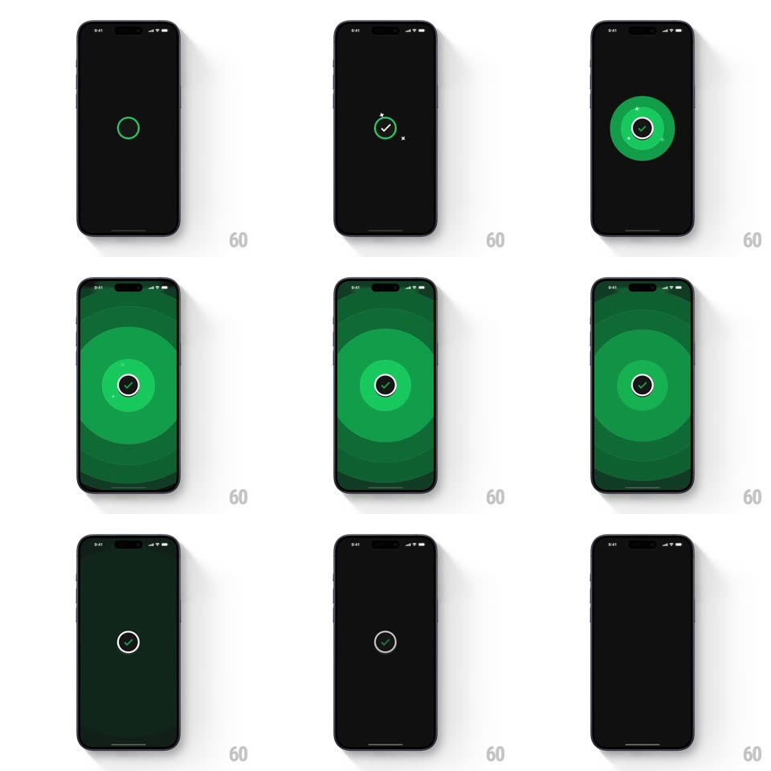

Media
Frame-by-frame

Rebuild this interaction 1:1: CRED's success check - a thin green ring draws itself at screen center, a checkmark strokes in, concentric green circles pulse outward to fill the whole screen with green, small sparkles pop around the mark, then everything fades back to black.

Rebuild this interaction 1:1: CRED's success check - a thin green ring draws itself at screen center, a checkmark strokes in, concentric green circles pulse outward to fill the whole screen with green, small sparkles pop around the mark, then everything fades back to black. ## Integration Integration: stack-agnostic spec - springs given as stiffness/damping, timed motions as duration + curve; map every value to your framework and animation library of choice. ## Scene Pure black screen. Center: the success emblem - a green-outlined circle containing a dark disc with a green checkmark, ringed by expanding concentric green circles and a few four-point sparkle glints. ## Motion spec Pattern: staged success emblem with radial pulse takeover. - Ring: a thin green circle strokes itself closed (trim path 0 -> 100%, 400ms, ease-in-out). - Check: the checkmark draws inside (stroke, 250ms) as the circle's center fills dark. - Pulse: concentric green rings expand outward from the emblem (scale 1 -> fills screen, ~800ms, ease-out, staggered ~100ms, 3-4 rings), washing the screen green. - Sparkles: 3-4 small star glints pop at random points near the emblem (scale 0 -> 1 -> 0, ~400ms each). - Hold ~600ms, then the emblem shrinks to a small circle and fades to black (400ms). ## Calibration - The takeover pulse starts only after the check completes - draw, confirm, then flood. - Rings stay distinct (alternating green tones) so the expansion reads as layered, not a flat fill. ## Reduced motion Emblem fades in complete (250ms), holds, fades out. No pulse, no sparkles. ## Don't miss - The screen ends fully green before fading out - the pulse covers everything. - Sparkles sit close to the emblem, not scattered across the screen.